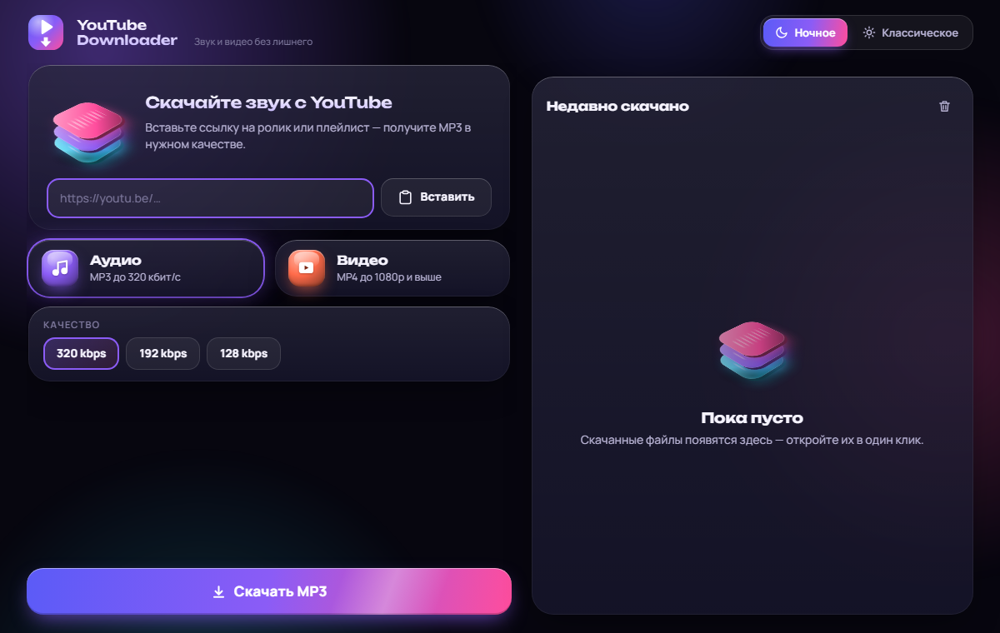

Вставьте ссылку и получите MP3 до 320 кбит/с или MP4 до 1080p и выше. Без рекламы, без регистрации, всё работает на вашем устройстве.
Скачать Расширение для Chrome
Выберите свою систему. Приложения не подписаны сертификатом, поэтому система один раз спросит подтверждение — как это обойти.
Windows 10 и 11, 64-бит. Обычный установщик со значком на рабочем столе.
Скачать .exe 50 МБApple Silicon (M1 и новее) или Intel. Образ .dmg: перетащите программу в «Программы».
Apple Silicon 56 МБ Intel 64 МБAndroid 8 и новее (arm64). Файл .apk: разрешите установку из неизвестных источников.
Скачать .apk 102 МБКнопки «MP3» и «MP4» прямо на странице видео YouTube. Расширение отправляет ссылку в программу на вашем компьютере, поэтому программа должна быть запущена.
Копирует расширение в папку, открывает chrome://extensions и показывает шаги.
Для Mac, Linux и ручной установки: распакуйте и загрузите папку в Chrome.
Скачать .zip 20 КБchrome://extensions и включите «Режим разработчика» справа вверху.Расширение нет в Chrome Web Store: магазин не принимает программы для скачивания с YouTube. Поэтому установка ручная, а Chrome может изредка напоминать об «отключении расширений для разработчиков».
Чистое аудио с обложкой и названием трека.
Выбор качества от 360p до лучшего доступного.
Целый плейлист одним нажатием (в приложениях для компьютера).
Современный интерфейс, одинаковый на всех системах.
Всё работает локально на вашем устройстве.
Движок yt-dlp и ffmpeg, исходники на GitHub (MIT).
Это стандартное окно SmartScreen для программ без платного сертификата. Нажмите «Подробнее» → «Выполнить в любом случае».
Правый клик по программе → «Открыть» → ещё раз «Открыть». Достаточно один раз.
В настройках разрешите браузеру или файловому менеджеру «Установку неизвестных приложений», затем откройте файл снова.
YouTube периодически меняет защиту. Скачайте свежую версию программы из раздела выше: в неё включён актуальный yt-dlp.
Код сервера лежит в репозитории (папка web), его можно запустить у себя командой или через Docker. Публичного сервера нет: YouTube блокирует дата-центры.